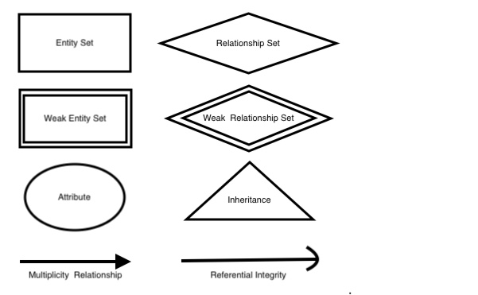
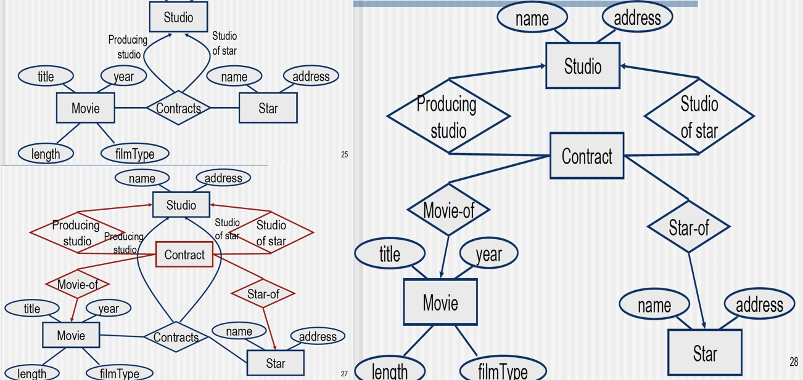
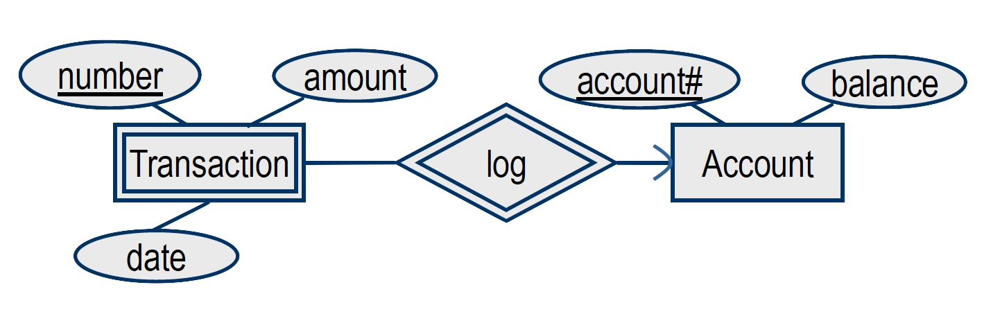

E/R = Entity Relationship Model
Object Oriented (ex: Object Definition Language)
Semi-structured Data (ex: XML)
Database Design is made using a Data Model describing:
Entity Relationship Model:

Entity:
Entity Set:
Attribute:
Relationship:
Relationship Set:
Set of relationships of the same type
If E1, E2, . . ., En are entity sets, a relationship R on these sets is defined as:
R ⊆ E1 x … x En
HERE
Converting n-ary relationship to binary

Inheritance:
Represented by ISA
In OO = an object must be a member of exactly one class
Things that cannot be represented using the ODL or E/R model introduced so far
Key K:
unique identifiers
Single-value Constraints:
1:1 — 1:M — M:1
The value for an attribute must exist if it is part of the key
The value for an attribute is optional, otherwise
Normalization = Atomic, means multiple values are not allowed
Referential Integrity Constraints:
Objects referred to by some object/entity must actually exist
Rounded Arrow Notation
Domain Constraints:
Restrict the values of an attribute to be drawn from a set
General Constraints:
Arbitrary constraints that must hold on the DB
Relationship degree constraints (multiplicity):
Restrict the number of entities in the entity sets involved in a relationship
ex: student cannot be enrolled in more than 5 courses
Superkey:
Set of attributes whose values uniquely identify an entity (object) in the entity set (class)
Minimal Superkey:
An entity can have many Candidate/Alternate Keys
Candidate keys are a special subset of super-keys that do not have any extraneous information in them
Only one of which is picked as the ~Primary Key~ (underlined in E/R)
ATM deposit transactions example: Different accounts might have transactions by the same number, on the same date, and for the same amount
